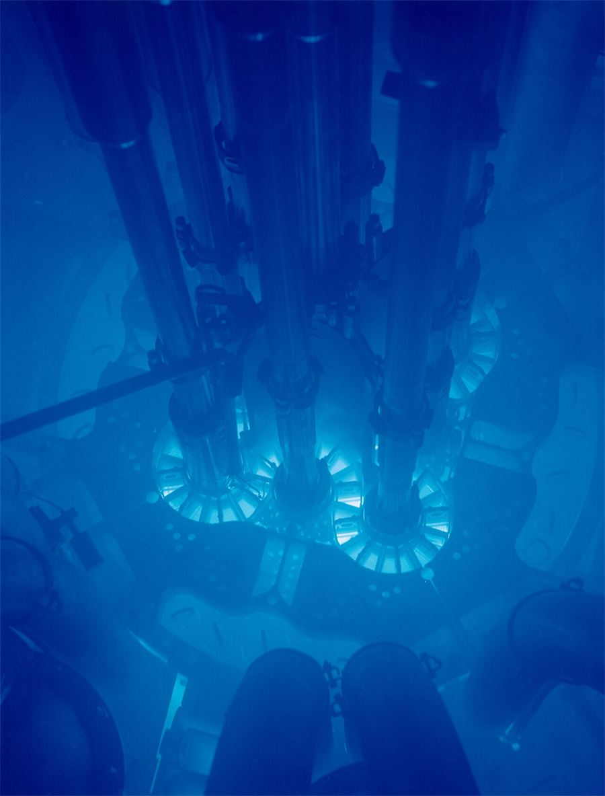

Themes › Theme E Nuclear and quantum physics
E.4Fission
Splitting one uranium nucleus releases about 200 MeV, millions of times more energy than burning one molecule of fuel. This topic explains where that energy comes from, how a chain reaction keeps it going, how a nuclear power station controls it safely, and what happens to the radioactive waste. It builds on the binding energy curve in E.3. There is no extra HL content in E.4.
New for 2028 For exams from 2028 the guide says you must calculate the change in mass, as well as the energy released, in fission reactions.
Knowledge and science
Nature of science
Interpretation. In 1938 Otto Hahn and Fritz Strassmann found barium among the products of uranium bombarded with neutrons, and couldn't explain it. Lise Meitner and her nephew Otto Frisch worked out that the nucleus had split in two, and named the process "fission". Only Hahn received the Nobel Prize.
Collaboration. In 1942 Enrico Fermi's team built the first nuclear reactor, Chicago Pile-1, under a sports stadium, and produced the first controlled chain reaction.
Ethics. The same physics led within three years to the atomic bombs used on Hiroshima and Nagasaki in 1945. Many of the scientists involved later campaigned against nuclear weapons.
Risk. The accidents at Chernobyl (1986) and Fukushima (2011) shaped public opinion for decades. Yet, per unit of electricity, nuclear power has caused far fewer deaths than coal.
ToK: questions to think about
- Are scientists responsible for how their discoveries are used? Meitner refused to work on the bomb; others chose to. Should scientists stop research that could be misused?
- How do we compare risks? Nuclear accidents are rare but dramatic; air pollution from fossil fuels kills quietly every day. Why do people often judge these risks so differently from the statistics?
- Can we make decisions for 10 000 years ahead? Some nuclear waste stays dangerous for longer than human civilization has existed. How can we know what future people will understand or need?
- Who gets the credit? Meitner's role in explaining fission was overlooked for years. What does this say about how scientific knowledge is credited?
1. What is fission?
Nuclear fission is the splitting of a heavy nucleus into two smaller nuclei of roughly similar size (the fission fragments), together with two or three neutrons and a large release of energy.
- Neutron-induced fission: a nucleus absorbs a neutron, becomes unstable and splits. This is what happens in reactors. Uranium-235 splits most easily when it absorbs a slow ("thermal") neutron, with a kinetic energy of about 0.025 eV.
- Spontaneous fission: some very heavy nuclei split on their own, without absorbing anything. It is very rare for uranium, but californium-252 does it often enough to be used as a neutron source.
A typical neutron-induced fission of uranium-235:
$$^{1}_{0}\text{n} + {}^{235}_{\;92}\text{U} \rightarrow {}^{236}_{\;92}\text{U}^{*} \rightarrow {}^{141}_{\;56}\text{Ba} + {}^{92}_{36}\text{Kr} + 3\,{}^{1}_{0}\text{n}$$Nucleon number and charge are conserved: $1 + 235 = 141 + 92 + 3 = 236$, and $92 = 56 + 36$. The fragments vary from one fission to the next; barium and krypton are just one possibility.
2. The energy released
On the binding energy curve (E.3), uranium has about 7.6 MeV per nucleon, but medium-sized fragments have about 8.5 MeV per nucleon. The fragments are more tightly bound, so they have less mass, and the difference is released.
Worked example: estimate from the curve
Each of the 236 nucleons gains about $8.5 - 7.6 = 0.9$ MeV of binding energy, so the energy released is about $236 \times 0.9 \approx 200$ MeV per fission.
Worked example: calculate from masses
For the reaction in section 1, the masses are: uranium-235 235.043930 u, neutron 1.008665 u, barium-141 140.914411 u, krypton-92 91.926156 u. Find the energy released.
Before: $235.043930 + 1.008665 = 236.052595$ u.
After: $140.914411 + 91.926156 + 3 \times 1.008665 = 235.866562$ u.
$\Delta m = 0.186033$ u, so $E = 0.186033 \times 931.5 = 173$ MeV $= 2.77 \times 10^{-11}$ J.
New for 2028 The 2028 guide says you must be able to calculate the change in mass in a fission reaction, as well as the energy released. The change in mass is (total mass before) − (total mass after), as in the example above. You may need it in atomic mass units or in kilograms, and you may need to work backwards from an energy to a mass.
Worked example: the mass a reactor loses New for 2028
(a) Express the change in mass in the reaction above in kilograms, and as a fraction of the mass before. (b) A reactor core releases thermal energy at a rate of 1.0 GW. How much mass does the fuel lose in one day?
(a) $\Delta m = 0.186033 \times 1.661 \times 10^{-27} = 3.090 \times 10^{-28}$ kg. As a fraction of the mass before: $\dfrac{0.186033}{236.052595} = 7.9 \times 10^{-4}$, so less than 0.1% of the mass is converted.
(b) Energy in one day: $E = 1.0 \times 10^9 \times 86\,400 = 8.64 \times 10^{13}$ J.
$\Delta m = \dfrac{E}{c^2} = \dfrac{8.64 \times 10^{13}}{(3.00 \times 10^8)^2} = 9.6 \times 10^{-4}$ kg, about 1 g per day.
Most of this energy appears as the kinetic energy of the fission fragments, which fly apart because of their electric repulsion. The rest goes to the neutrons, gamma rays, and the later decay of the radioactive fragments. In a reactor, the fragments collide with the surrounding atoms, and their kinetic energy becomes thermal energy.
Worked example: energy from 1 kg
How much energy would 1.0 kg of uranium-235 release, at 173 MeV per fission?
Number of nuclei: $N = \dfrac{1.0}{235 \times 1.661 \times 10^{-27}} = 2.56 \times 10^{24}$.
Energy: $2.56 \times 10^{24} \times 2.77 \times 10^{-11} = 7.1 \times 10^{13}$ J. Burning 1 kg of coal releases about $3 \times 10^7$ J, so this is over 2 million times more.
Linking question In which form is energy released as a result of nuclear fission? E.3 Mass defect and binding energy →
3. Chain reactions and critical mass
Each fission is triggered by one neutron but releases two or three more. If at least one of these goes on to cause another fission, the process keeps itself going: a chain reaction.
- In a reactor, on average exactly one neutron from each fission causes another. The rate stays steady.
- In a bomb, more than one does, so the rate grows exponentially and the energy is released in a fraction of a second.
Neutrons can be lost: they escape through the surface, or are absorbed without causing fission. A small lump of fuel has a large surface compared with its volume, so too many neutrons escape. The critical mass is the minimum mass of fuel needed for a self-sustaining chain reaction.
Natural uranium is 99.3% uranium-238, which rarely fissions with slow neutrons, and only 0.7% uranium-235. Most reactors use enriched uranium, with 3–5% uranium-235.
4. Inside a nuclear power station
A nuclear power station is a thermal power station: the reactor is just a heat source, replacing the furnace of a coal-fired station.
- Fuel rods hold the enriched uranium, usually as pellets of uranium oxide.
- Moderator slows the fast neutrons from fission (about 2 MeV) down to thermal speeds, so that they are much more likely to cause fission in uranium-235. Neutrons lose energy by colliding with light nuclei, such as hydrogen in water or carbon in graphite. The lighter the nucleus, the more energy a neutron loses in each collision.
- Control rods absorb neutrons (they contain boron or cadmium). Lowering them further into the core absorbs more neutrons and slows the reaction; raising them speeds it up. Dropping them in fully shuts the reactor down.
- Coolant (usually water under high pressure, sometimes carbon dioxide gas or liquid sodium) is pumped through the core to carry the thermal energy away.
- Heat exchanger transfers thermal energy from the coolant to water in a separate circuit, turning it to steam to drive the turbine. Keeping the circuits separate stops radioactive material reaching the turbine.
- Shielding: a steel pressure vessel and a thick concrete building around the core absorb neutrons and gamma rays, protecting workers and the environment.

The energy chain is: nuclear energy → kinetic energy of fragments → thermal energy of the coolant → kinetic energy of steam and turbine → electrical energy. Overall efficiency is about 33%; most of the energy is lost as heat at the condenser, which is why power stations have cooling towers or are built by the sea.
Extra linking question Why do neutrons lose the most energy when they collide with light nuclei? A.2 Conservation of momentum, collisions and explosions →
5. Power station calculations
Worked example: fuel use
A nuclear power station produces 1.0 GW of electrical power with an efficiency of 33%. Each fission releases 200 MeV. Estimate the mass of uranium-235 used each day.
Thermal power from the reactor: $\dfrac{1.0 \times 10^9}{0.33} = 3.0 \times 10^9$ W.
Energy per fission: $200 \times 10^6 \times 1.60 \times 10^{-19} = 3.2 \times 10^{-11}$ J. Fissions per second: $\dfrac{3.0 \times 10^9}{3.2 \times 10^{-11}} = 9.4 \times 10^{19}$.
Per day: $9.4 \times 10^{19} \times 86\,400 = 8.1 \times 10^{24}$ nuclei, with mass $8.1 \times 10^{24} \times 235 \times 1.661 \times 10^{-27} = 3.2$ kg.
A coal-fired station of the same power burns about 8000 tonnes of coal a day.
Linking question How is binding energy used to determine the rate of energy production in a nuclear power plant? E.3 Binding energy per nucleon →
6. Fission products and nuclear waste
The fission fragments have too many neutrons for their size (E.3), so they are highly radioactive, mostly β⁻ and gamma emitters. Some have short half-lives and are intensely active at first; others, such as caesium-137 (30 years), last for decades. Some uranium-238 in the fuel absorbs neutrons and becomes plutonium-239 (half-life 24 000 years), an alpha emitter.
Spent fuel is the most dangerous waste. It is managed in stages:
- Cooling ponds: spent fuel rods are stored under water for several years. The water absorbs the radiation and removes the heat that the decaying products keep producing.
- Reprocessing (in some countries): unused uranium and plutonium are separated out and can be reused as fuel.
- Vitrification: the high-level waste is mixed into glass and sealed in steel containers, so it can't dissolve or leak.
- Long-term storage: the plan in several countries is a deep geological repository, hundreds of metres underground in stable rock, where the waste can stay isolated for many thousands of years.
Less dangerous waste, such as contaminated clothing and tools, is compacted and stored in shallower sites. The long-term problems are keeping waste secure and isolated from groundwater for longer than any human institution has existed, and preventing plutonium being used for weapons.
7. Fission and climate change
Fission doesn't burn anything, so a nuclear power station emits almost no carbon dioxide while running. Including mining, building and decommissioning, its lifetime emissions per unit of electricity are similar to wind power and far below coal or gas.
| For nuclear power | Against nuclear power |
|---|---|
| Very low carbon emissions | Long-lived radioactive waste |
| Reliable, steady output whatever the weather | Rare but serious accidents |
| Tiny amounts of fuel needed; uses little land | Very expensive and slow to build and to decommission |
| Fuel reserves will last a long time | Risk that materials could be used for weapons |
Linking question To what extent is there a role for fission in addressing climate change? NoS B.2 The enhanced greenhouse effect →
8. Common mistakes
- Saying fission releases energy because "bonds break". Energy is released because the products have a higher binding energy per nucleon, so less mass.
- Saying the moderator absorbs neutrons. It slows them down. The control rods absorb them.
- Thinking fast neutrons are better at causing fission. In uranium-235, slow neutrons are far more likely to be absorbed and cause fission.
- Forgetting the neutrons when balancing a fission equation, or when adding up the masses after fission.
- Saying a reactor can explode like a bomb. Reactor fuel is not enriched enough, and the reaction can't grow fast enough. Accidents involve overheating, fires and steam explosions.
- Mixing up electrical and thermal power in efficiency calculations. The reactor produces the thermal power; the station outputs the electrical power.
9. Check your understanding
Balance this fission: $^{1}_{0}\text{n} + {}^{235}_{\;92}\text{U} \rightarrow {}^{144}_{\;55}\text{Cs} + {}^{90}_{37}\text{Rb} + x\,{}^{1}_{0}\text{n}$. What is $x$?
Nucleons: $236 = 144 + 90 + x$, so $x = 2$. Charge: $92 = 55 + 37$. ✓
Why is water a good moderator?
It contains hydrogen nuclei (protons), which have almost the same mass as a neutron, so a neutron loses a large fraction of its energy in each collision.
An operator wants to reduce the power of a reactor. What should they do, and why does it work?
Lower the control rods further into the core. They absorb more neutrons, so fewer fissions happen each second.
Why must there be a heat exchanger between the reactor and the turbine?
The coolant passing through the core becomes radioactive. The heat exchanger passes on its thermal energy without the coolant itself leaving the shielded area.
Why are fission fragments radioactive?
They have too many neutrons for their size (they lie above the band of stability), so they undergo β⁻ decay.